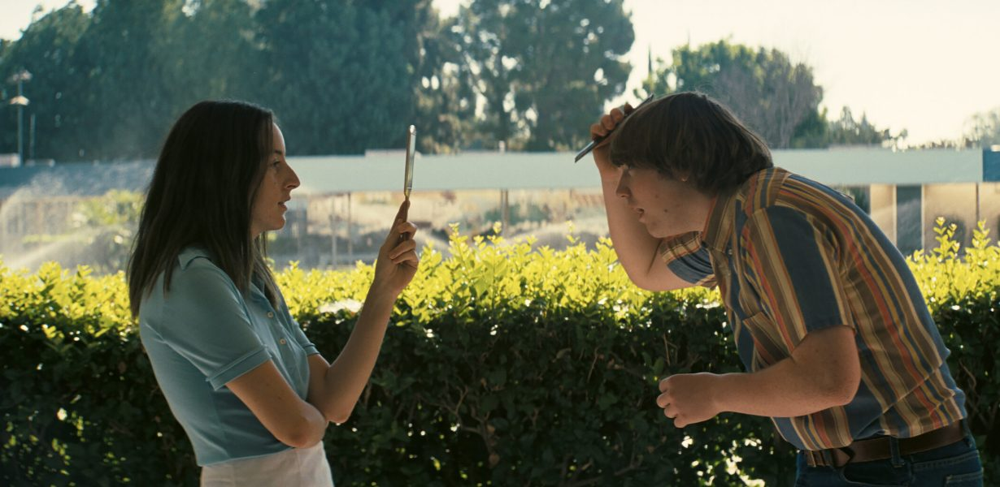

Alana dan Gery

Sepasang sahabat tinggal di pesisir Pantai Purwa.
Nama mereka Alana dan Gery.
Ikatan mereka adalah diperkuat oleh seberapa dekat mereka tinggal satu sama lain dan perbedaan usia yang relatif pendek.
Mereka selalu bermain di dermaga, menyapa para nelayan yang berlarian di tengah laut berpasir putih.
Suatu hari, ayah Gery dipindahkan ke suatu lokasi di Pulau Sulawesi.
Alana hancur, tapi keduanya berjanji untuk tetap berteman apapun yang terjadi. “Alana, aku berjanji akan kembali suatu hari nanti,” Gery ucapnya sambil mengulurkan gelang bertuliskan nama Alana.
Hari-hari berlalu dengan cepat, seperti mesin yang melahap benda dalam sepersekian detik.
Setiap hari libur, mereka bertukar surat, sebuah tradisi yang mereka lanjutkan selama lima tahun berikutnya.
Hingga suatu pagi, ketika Gery terbangun dan membuka kotak surat di depan rumahnya, ia tidak menemukan apa pun tapi kekosongan.
Sudah lebih dari seminggu, dan Gery bertanya-tanya mengapa Alana belum membalasnya surat.
Dimana dia? Dimana Alana? Bukan hanya Gery, bahkan tukang pos pun pun pun mencari Alana.
Dimana dia? Apakah dia terjebak di dalam surat-surat? Atau mungkin dalam kesadaran bahwa segala sesuatunya sia-sia, dan Gery hanyalah seorang nama yang tidak akan pernah dilihatnya lagi?